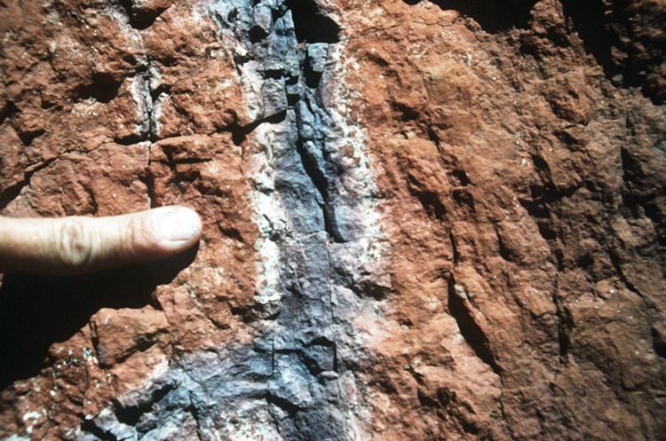

DESCRIPTION: Red siltstone member, Upper Triassic Chinle Formation, Colorado National Monument, Fruita Colorado . Fluvial deposits, overbank floodplain environments. Calcareous lined rhizoliths show fluctuating water tables and seasonally drier climate periods (Dubiel and Hasiotis, 1994, unpub.).
